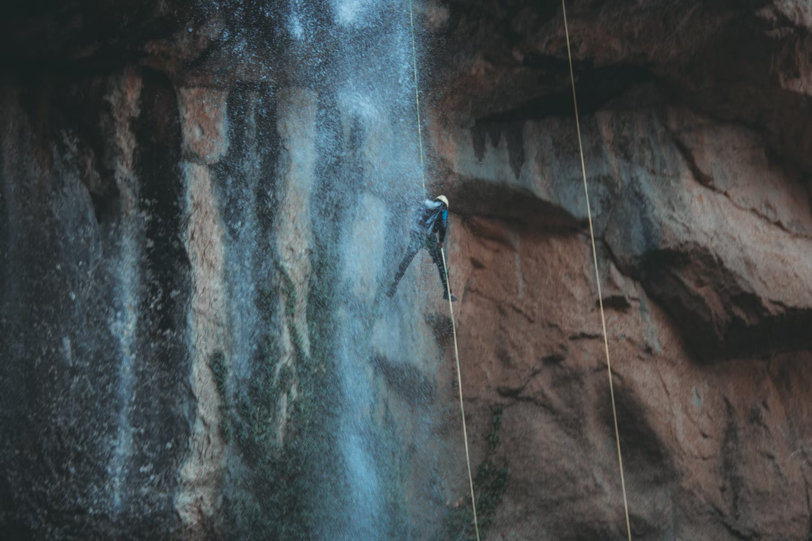

Welcome to Lochquarry Outdoor Centre
Book Today - tomorrow may be too late!

Discover adventure and excitement at Lochquarry Outdoor Centre, the perfect destination for young people aged 6–18. Explore our wide range of land, water, and rope activities designed to create unforgettable memories. Join us and embark on a journey of fun and discovery! |
Our Activities
At Lochquarry Outdoor Centre, we offer a diverse range of activities to suit every interest and skill level. From thrilling land adventures to exciting water sports and challenging rope courses, there’s something for everyone to enjoy.
...Creating Memories That Last a Lifetime!
We are dedicated to providing exceptional outdoor experiences for young people. Explore our website to learn more about our activities and how we can help create lasting memories for your group.

LAND BASED Explore the great outdoors with our exciting land-based activities. |

WATER BASED Dive into adventure with our thrilling water-based activities. |

ROPE BASED Reach new heights with our challenging rope-based activities. |
Explore Our Activities
Discover the different categories of activities available at Lochquarry Outdoor Centre. Whether you're passionate about exploring the land, conquering the water, or challenging yourself on our rope courses, we have an adventure waiting for you.
Activity list
- Land based Activities
-
- Hillclimbing
- Orienteering
- Archery
- Axe throwing
- Water based activities
-
- Canoeing
- Kayaking
- Speadboating
- Rope based activities
-
- Abseiling
- Climbing
- Pole climbing
Lochquarry Outdoor Centre is dedicated to providing young people with unforgettable outdoor experiences. Our experienced and passionate team is committed to creating a safe and supportive environment where young people can challenge themselves, build confidence, and develop new skills.
‘The kids had a ball and didn’t want to leave’ − Mr Evans, PE teacher